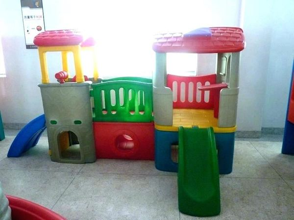
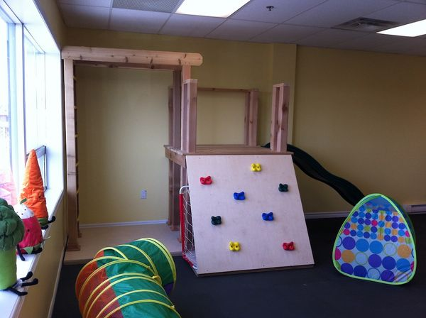

Sensory Center
Contents |
Abstract
Jaxson, a young boy who has sensory issues, needs an activity center that will encourage him to crawl, play, and learn in his home environment.
Team members
- Photo of team
Aaron Powers
Garrick Rainey Jr.
Graham Estes
Haley Goldston
Problem Statement/overview of the need
Jaxson does not show an interest in crawling and his parents have noticed he has sensory issues. He needs an activity center to help develop fine motor skills.
Design Specifications
Priority Requests:
- Sensory issues
- Safe
- Collapsible/Lightweight
- Fits in a corner
Additional Requests:
- Lights
- Tunnel
- Slide/Stairs
- Makes noises
- Cubby System
Background research
There are several different activity centers available on the market today, however, the requests that have been made by Jackson's mother makes most obsolete. The activity centers offered on the market have aided us in our overall design ideas. We have listed a few examples that we have drawn inspiration from.
Plastic activity center with tunnel underneath:

Wooden activity center:

Conceptual Design
Design Concept 1
Design Concept 2
Evaluate concepts/select candidate
| Characteristics | Design Concept 1 | Design Concept 2 |
|---|---|---|
| Safety | 3 | 4 |
| Collapsibility | 3 | 2 |
| Sensory Issues | 5 | 5 |
| Size | 4 | 2 |
| Price | 3 | 3 |
| TOTAL | 18 | 16 |
Design one was the most efficient use of space.
Detailed Design
Description of selected design
After discussing with the therapist in regards to the design concepts, we have decided to go with Design Concept 2. There will be a few alterations to be made to the design, but the overall design will still be used for this project. The platform top will be made of a 23/32 CAT PS2-10 Subfloor. The estimated overall weight is 65 lbs.
We have decided to purchase a pre made slide and modify it versus making an initial piece. Since there will be stairs leading to a platform that the child could crawl/walk upon, there will need to be a railing system on the platform itself to prevent him from falling off. Underneath the platform itself there will be an area that pertains to his sensory development skills; such as LED lights, Velcro hair rollers, stretchy rubber cord etc. There will be a tunnel that goes underneath the slide that will have each section a different color and on the inside of each color there will be a different textured pattern for him to feel such as shag carpet, fake grass, and a rubber bath mat.
Analysis
Describe three types of analysis to be performed on the design. A major engineering analysis that will be done is the force placed upon the top of the platform to see if the material chosen will flex. The second analysis performed will be to see the forces acting on each support leg. Finally, the last analysis will be a list of the sensory objects and the mechanisms involved with each.
Engineering analysis 1
With an initial load of 75 lbs being applied to the center of the 3x3 wooden platform there is a maximum deflection of approximately 0.02362". Considering Jaxson's weight, we have applied a factor of safety (3) that not only keeps the deflection within reason, but extends the longevity of this project. It also allows him to be able to grow and still have full functionality and stability while on the platform.
Engineering analysis 2
The 6061 Aluminum legs that will support the platform and multiple assortments of sensory items while minimizing the amount of twist is the main goal for these legs. With a load of 75 lbs applied to the center of the platform, the deflection in the legs is nearly 0". Likewise, when the 75 lb load is applied to the center of each leg, the maximum deflection is 0.0002021".
Engineering analysis 3
With this analysis, we focused on the sensory activities and how each would benefit the child in different areas of skill development.
- Doorknob - practice a daily motor skill of rotation/twisting
- Rainstick - providing a cause and effect as well as rotation development in the hand and auditory sensory development
- Stretchy Rubber Rope - hand-eye coordination and gross motor skill development
- Dog Face with Metal Nose - sensory development
- Key & Lock - hand-eye development, twisting of the hand, as well as cause and effect development.
- Different Colored Tunnel - visual sensory development, attention/observation, and color recognition
- Spring Door Stop - hand-eye coordination and auditory development
- Slide Bolt Entry Door Chain Guard - hand-eye coordination development
- Swivel Casters - twisting of the hands and cause/effect
- Artificial Grass - sensory development
- Rubber Bath Mat - sensory development
- Light Switch - practice of a common house hold item while aiding to hand-eye coordination development
CAD Drawings
Bill of Materials
qty, item, description, source, part number, price
Assembly Instructions
Insert assembly instructions
=== Fabrication Process ===
Testing and implementation
We delivered the center to the family at 10 AM December 11, 2018. Upon initial arrival with the individual pieces the family was a little worried due to the size, but after completing the installation they loved it. Not long after setting the center up, the father and son were both under the platform playing with the sensory items, mainly the door stop. Jaxson loved the noise the door stop made and it was easy to see it would be his go to item to play with.
Photos of Completed design
Instructions for safe use
We stapled led lighting around the platform and we just alerted the family just to watch him to make sure that he did pull on them. We also instructed the family to keep an eye out for splinters and to regularly make sure all bolts and screws were tight. Also, to keep an eye on him while sliding down the slide just until he got use to that motion. Lastly, the center was designed to go into a corner hence the railing on one side, however, with the position it is in now they will need to make sure they are around when he is on the top level of the platform.